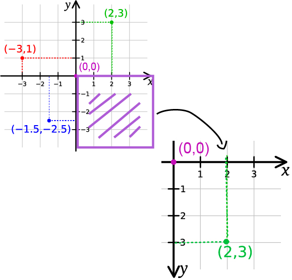
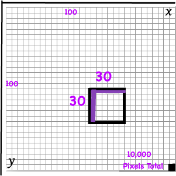

Coordinate System of Pixels
Seeing a graph is the best way to understand the numbers in the rect functions for instance. Understanding the coordinate system of computer graphics is pretty straightforward. If you have taken algebra, you will notice that this system is slightly different from the Cartesian Coordinate System.[1]
The good news is that there is only 1 quadrant to worry about. The grid on the right is just two lines meeting at a point in the upper-left corner. As you know, the line in the West-East direction is called the X-Axis and the one in the North-South direction is the Y-Axis. The x-axis and y-axis meet at a special position called the Origin. Both x and y-axis are divided into tiny colorful blocks called Pixels, which make up everything you see on the screen. Without pixels, computer graphics would be very difficult to create. Because the parameters within a function literally tell you the amount of pixels needed, you will see the process of how computer graphics are made.
The Sketch Window

[2]
In order to draw the rectangle [3], the computer needs to create a Sketch. The computer chooses a starting point within the sketch that will be the origin. Then, counts straight to the right on the x-axis and down on the y-axis to draw the sketch window. By default, the computer creates a window that is 100 pixels wide and 100 pixels high with an invisible border. Since the PDE was programmed to know geometry ahead of time, it knows that multiplying 100 X 100 will give us an area of 10,000 pixels to draw on (later, we will make the window bigger), big enough to draw the rectangle. The computer sees the code from Copy & Paste Code 1 and does the same thing, but starts at the center of the sketch window, which is 50 pixels X 50 pixels. Then, draws 30 pixels to the left and 30 pixels down We now have a rectangle like the graph below, which shows an approximation on where the pixels would be on the screen.
References
1.https://processing.org/reference/environment/#Coordinates
2.https://processing.org/reference/rect_.html
Images:
The Cartesian Coordinate system and x and y characters is in the public the domain. I made some modifications for demonstrate purposes


{kind=link}